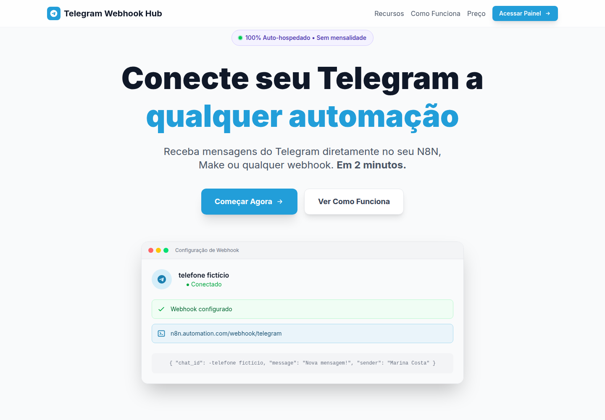
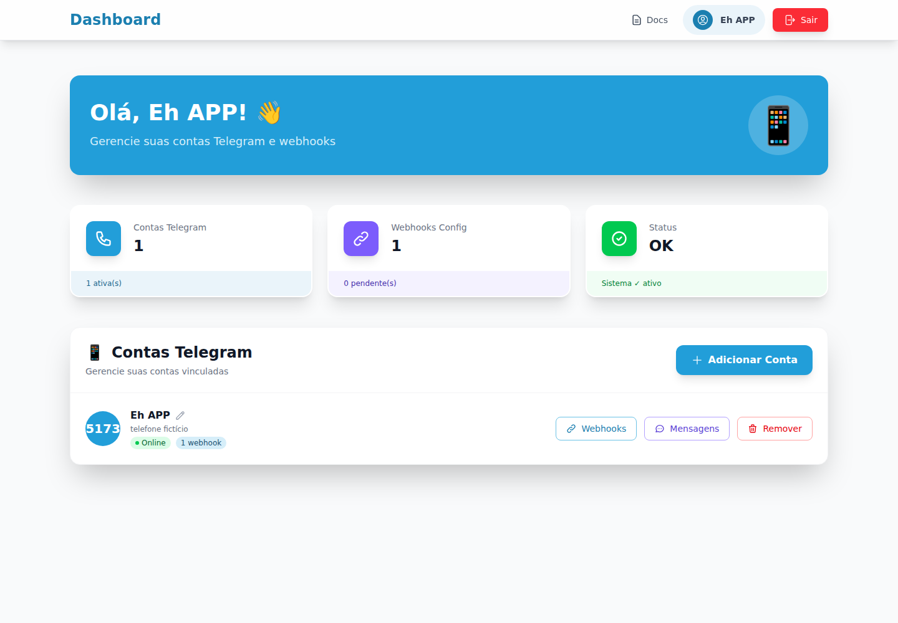
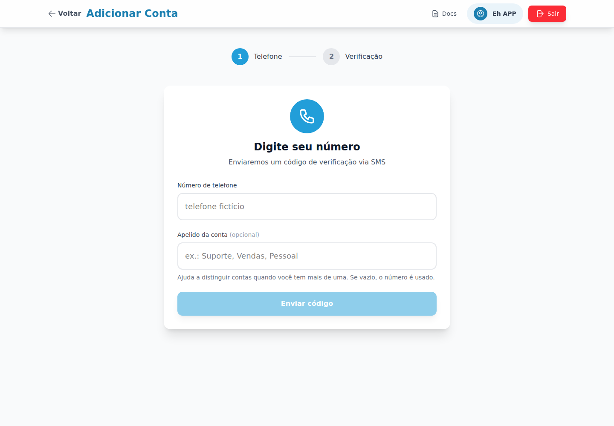
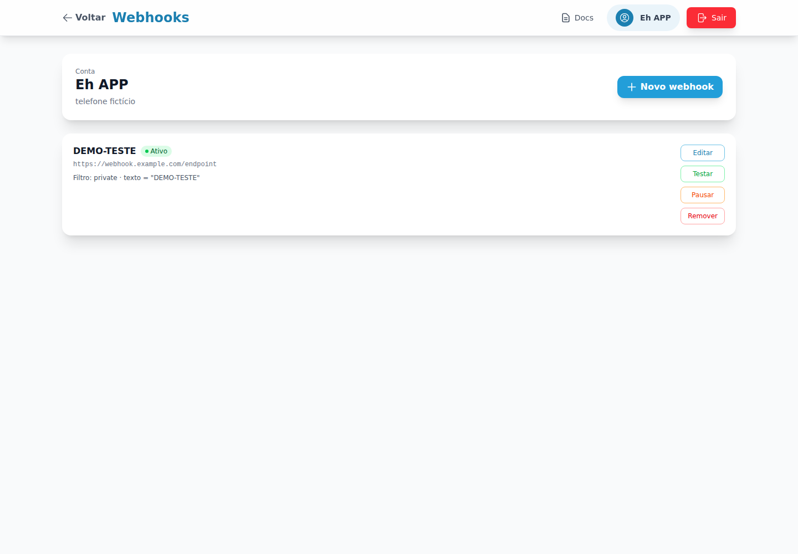
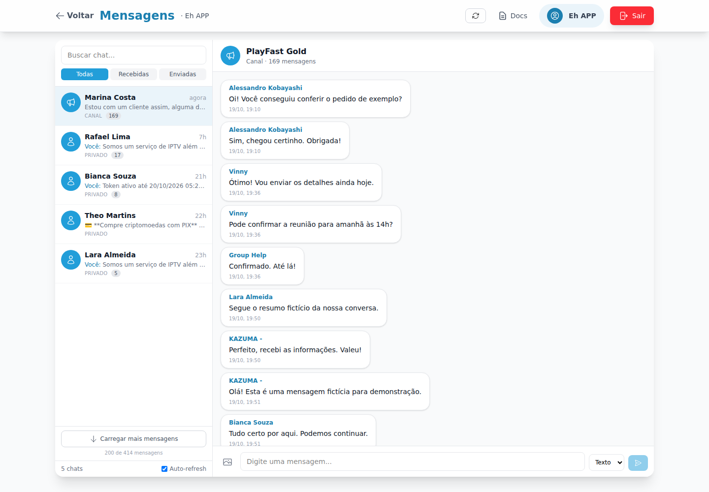

Vários destinos
Configure múltiplos webhooks para cada conta Telegram e conecte diferentes ferramentas ou serviços.
Conecte contas do Telegram aos seus fluxos de automação — com filtros e respostas pela mesma sessão.





O Telegram Webhook Hub conecta contas do Telegram a ferramentas de automação e serviços externos. As mensagens recebidas são encaminhadas para os webhooks configurados, e cada integração pode ter seus próprios filtros.
Configure vários webhooks para uma conta — por exemplo, um para o n8n, outro para o Slack e outro para uma API própria. Quando precisar responder, use o endpoint de envio para mandar a mensagem ao chat pela mesma sessão Telegram.
O painel web centraliza o gerenciamento de contas, apelidos e integrações.
Configure múltiplos webhooks para cada conta Telegram e conecte diferentes ferramentas ou serviços.
Filtre por direção da mensagem, tipo de chat e correspondência de texto — igualdade ou trecho.
Envie uma mensagem para o chat de origem usando a sessão Telegram que recebeu a interação.
Gerencie contas conectadas, seus apelidos e os webhooks associados em um só lugar.
Encaminhe eventos para n8n, Make, Slack ou para o seu próprio backend.
Consulte o registro de mensagens processadas pela integração.